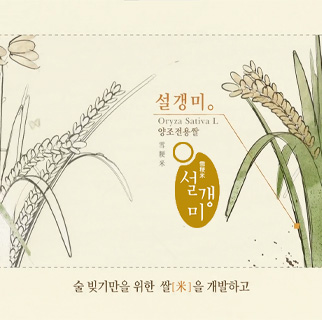
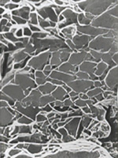
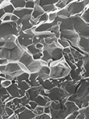
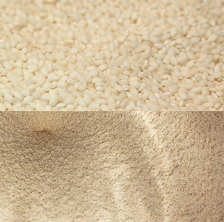

> 사업영역 > 연구소
연구소
소중한 우리술과 우리문화 국순당이 지켜갑니다.
연구소
좋은 술을 만들어 내는 일과 미래 가치를 창조하는 사람들,
우리술의 다양성을 되살리고 우리술 문화를 복원하는 공간입니다.
위치안내
-
사업의 중요 기술분야에서 경쟁 위치 확보 및 사업영역 다각화
-
제품의 기능과 효익을 확장하여 삶의 질 향상에 기여
-
창조적 혁신을 통한 초일류 기술력 확보
-
지속적 변화를 통한 조직원의 전문성 강화
구성 : 연구원 22 명
주요 장비 : GC/MS, GC/O, HPLC, UV/vis spectrophotometer, NIR spectrophotometer, colorimeter 등 최첨단 연구 설비 다량 보유
연구 분야
설갱미
설갱미란?

- 품종
- 설갱
- 학명 및 일반명
- Oryza sativa L. / 벼
1991년 농촌진흥청 작물시험장에서 육성하여 2001년 등록한 벼 품종 입니다.
찹쌀 외관의 뽀얀 멥쌀로 찰벼보다 더 불투명한 배유 특성을 나타내고
단백질 함량이 낮으며 유리당과 필수 아미노산 함량이 높습니다.
- 주요특성
- 가공용(발효식품용), 일반계(자포니카) 단간,
내도복성, 내수발아성, 다수성, 고품질(연질미)
- 재배 적응 지역
- 중부 및 남부평야지
품종의 성능
설갱미 품종의 성능
|
항목 |
품종 : 화성 |
품종 : 설갱 |
| 수량(kg/10a) |
중부평야(보통기) |
542 |
541 |
| 남부평야 |
539 |
519 |
| 호남평야(만식) |
544 |
574 |
| 품질 |
밥맛(식미계지수) |
71.5 |
70.2 |
| 아밀로스(%) |
19.9 |
19.3 |
| 외관(심복백0-9) |
01 |
연질미 |
| 내재해성 |
내냉성(유묘, 0-9) |
4 |
4 |
| 수발아율(%) |
34.1 |
24.0 |
| 불시출수율(%) |
0 |
0 |
| 위조 |
강 |
강 |
| 내도복성(0-9) |
1 |
0 |
| 기타 특성 |
생육일수(일) |
125 |
134 |
| 간장(cm) |
89 |
83 |
| 수장(cm) |
20 |
21 |
| 수당립수 |
90 |
113 |
| 현미천립중 |
21.1 |
20.3 |
닫기
설갱미 우수성
우수한 영양성
출처: 쌀 품종간 성분 및 미세구조 차이와 호화. 노화 특성과의 관계, 강희진. 서울대학교 대학원 [2004]
주질 향상
- 설갱미
- 잡미와 느끼한 맛, 쓴맛이 적고 맛이 부드럽고 깔끔함
- 일반미
- 쓴맛과 떫은맛 등으로 맛이 거칠고 끝 맛에 잡미가 끌림
- 최적의 단백질 함량으로 술맛이 부드럽고 깔끔합니다.
공정상의 장점
| 바깥층 |
 |
 |
| 중간층 |
| 속층 |
|
설갱미 |
일반미 |
| 분류 |
단백질 |
| 설갱미 |
6.2 |
| 일반미 |
6.8 ~ 7.0 (6.7) |
설갱미는 성긴 구조적 특징을 지니고 있으므로 다음과 같은 장점이 있습니다.
생쌀발효법
생쌀발효법이란?

고사촬요(攷事撮要)
“쌀을 가루 내 끓는 물을 부어 반죽하여 술을 빚는다”
무증자 발효법으로 술이 만들어질 때까지 높은 열을 가하지 않고, 가루 낸 생쌀과 상온의 물을 그대로 사용하여 술을 빚는 방법입니다. 연구를 통해 누룩 미생물 중 생쌀 분해가 가능한 우수한 곰팡이(거미줄 곰팡이)를 분리해내어 생쌀 발효법을 복원하였습니다.
생쌀발효법 우수성
-
우수한 영양
- 필수 아미노산 2배이상 함유
- 비타민 B군이 풍부
- 낮은 조단백질 함량
-
숙취 감소
- 숙취의 원인물질
(아세트알데히드)을 분해할 수 있는 촉진물질 풍부
-
에너지 절약
- 전체 공정의 60%
에너지 절감 효과
-
친환경 공법
- 원료 증자 시 발생하는
이산화탄소 발생량 감소
(단위 : mg / 100ml)
증자막걸리와 무증자막걸리에 함유된 아미노산의 종류와 양
| 아미노산 종류 |
일반막걸리 |
생쌀발효막걸리 |
| 라이신 Lysine |
5.26 |
13.9 |
| 히스티딘 Histidine |
4.64 |
19.94 |
| 알기닌 Arginine |
17.02 |
25.59 |
| 아스파틱산 Aspatric acid |
4.31 |
8.59 |
| 트레오닌 Threonine |
0.85 |
2.25 |
| 세린 Serine |
6.81 |
12.91 |
| 글루타민산 Glutamic acid |
8.56 |
16.45 |
| 프롤린 Proline |
15.27 |
7.89 |
| 글라이신 Glycine |
3.38 |
7.79 |
| 알라닌 Alanine |
5.89 |
8.46 |
| 발린 Valine |
2.64 |
7.21 |
| 메치오닌 Methionine |
1.94 |
4.29 |
| 이소루이신 Isoleucine |
7.06 |
17.96 |
| 루이신 Leucine |
9.9 |
18.59 |
| 타이로신 Tyrosine |
8.71 |
19.98 |
| 페닐알리닌 Phenylalanine |
3.54 |
5.71 |
| 시스테인 Cystein |
5.62 |
12.81 |
참고자료 : 한국산업미생물학회지 1990년 제18권 제5호 506쪽 기재된 본사의 발표자료에서 발췌
암세포에 대한 전통약주의 세포독성 효과
- 식품과학회지 (2004) | 암세포에 대한 전통약주의 세포독성 효과
- 한국 전통약주와 기존에 암세포주에 대한 세포독성이 보고되어 있는 알코올 음료에 대한 항종양 세포독성을 비교하기 위하여 무증자 발효 방법으로 발효시키면서 한약재를 첨가한 전통약과 뽕잎, 메밀등을 첨가한 전통약주, 비교 시료로 적포도주, 백포도주, 맥주, 일본 청주 등에 대하여 연구하였다.
- 각 시료에 대하여 10-80배까지 단계적으로 희석하여 DLD-1, HepG2, K562, EMT6, LLC1 에 처리하였을 때, 인체유래 대장암 세포주인 DLD-1의 경우 적포도주에서만 강한 세포독성이 확인되었는데, 전통약의 경우 그 농축액에서 DLD-1에 대하여 적포도주와 유사한 세포독성을 확인할 수 있었다.
- 나머지 4종의 암세포주에서는 10~20배 희석배수에서 적포도주, 전통약주, 전통약주가 세포독성을 보였으나, 각 암세포주의 종류에 따라서 세포독성은 약간씩 차이를 보였다. HepG2, K562, EMT6의 경우 10배 희석배수에서 모두 비슷한 세포독성을 보인 반면에 마우스유래 폐암세포주인 LLC의 경우에는 전통약과 전통약주의 세포독성이 적포도주보다 우수한 것을 확인하였다.
- 본 연구의 결과에 의하면 이러한 항암효과는 전통약주에 존재하는 미지의 약리성분이 작용하는 것으로 판단되었다.
- 원문보기
한국 전통약주의 위 보호 효과
- 식품과학회지 (2004) | 한국 전통약주의 위 보호 효과
- 본 실험은 랫드나 마우스에서 2가지 실험적 위궤양 유발 모델과 알코올 반복 투여를 이용하여 한국 전통약주의 위 보호효과를 확인하였다.
- 24시간 절식시킨 랫드에 전통약주를 250-1000 mg/kg 경구 투여하고 30분 후에 150 MM HCI-60% EtOH를 투여하거나 전통약주 62.5-1000 mg/kg를 투여하고 30분 후에 무수 에탄올을 경구 투여하였을 때, 대조군에 대해 유의성 있는 위병변 억제효과를 나타내었다. 또한 마우스에서 30% 알코올을 12시간 간격으로 7일간 반복투여를 하였을 때, 대조군에 대해 육안으로 관찰 가능한 위병변 억제 효과를 확인하였다.
- 원문보기
Nuruk extract inhibits LPS-induced production of nitrite and IL-6 in RAW264.7 cells through blocking activation of p38 MAPK
- J. Microbiology and Biotechnology (2008) RAW264.7 세포에서 누룩 추출. 물의 p38 MAPK 활성 억제를 통한 LPS에 의한 nitrite와 interleukin-6의 생성 억제
- 누룩은 amylolytic 효소 활성을 가지고 있으며 한국 전통약주 제조에 사용되고 있다. 누룩의 MeOH 추출물은 RAW264.7 세포에서 LPS에 유도된 nitrite interleukin-6 생성을
저해하였다.
- 누룩 추출물의 hexane과 H2O 분획도 nitrite interleukin-6 생성을 억제하였으며 nitric oxide synthase의 발현을 저해하였다. 뿐만 아니라, hexane과 H2O 분획은 LPS에 의한 p38 mitogen-activated protein kinase (MAPK)의 활성화를 저해하였다. 본 연구 결과는 누룩은 항염증 활성을 가지고 있으며 한국 전통 약주의 암 예방 효과에 기여하는 것으로 사료된다.
- 원문보기
누룩 (Rhizopus oryzae KSD-815)으로부터 분리한 지질화합물의 세포독성 및 항염증 활성
- 누룩은 다양한 미생물로 구성되어 있으며 우리나라 술을 포함한 전통 발효식품을 제조하는데 사용되어 왔다. 본 연구는 전통주를 제조하는 누룩에서 분리한 Rhizopus oryzae KSD-815에서 분리 동정한 4가지 지질화합물의 암세포 독성 및 항염증 활성에 규명하였다.
- 건조분말 형태의 누룩 (Rhizopus oryzae KSD-815)을 80% MeOH로 추출하고, 이 추출물을 ElOAc, n-BuOH, 그리고 물을 이용하여 연속적 분획화를 하였다. 특히 EtOAC 분획은 80% MeOH로 현탁 후 n-hexane으로 재분화 하였다. 이 n-hexane 분획으로부터 silica gel과 ODS column을 이용하여 4가지 지질화합물을 분리하였다.
- 분리된 지질화합물은 NMR, GC, MS 등의 분석으로 화학적 구조를 결정한 결과, linolenic acid methyl ester (1), palmitic acid methyl ester (2), linoleic acid (3), palmiticacid (4)로 규명하였다. 4가지 지질화합물 중 (1)과 (3)은 유방암과 간암 세포를 농도의존적인 세포독성 효과를 확인하였으며, (3)은 LPS와 IFN-g로 유도한 염증 모델에서 염증 억제 현상을 관찰하였다.
- 원문보기
한국 전통 약주의 B16BL6 mouse melanoma 및 HRT18 human colon adenocarcinoma 세포 성장 억제 효과
- 한국응용생물화학회지 (2008) | 누룩 (Rhizopus oryzae KSD-815)으로부터
분리한 지질화합물의 세포독성 및 항염증 활성
- 한국 전통 약주의 암세포주에 대한 세포독성과 체내에서의 암세포 성장 및 전이에 대한 영향을 조사하기 위하여 무증자 발효 방법으로 발효시킨 전형적인 약주(전통약주II)와 이 약주에 한약재를 첨가하여 발효한 것(전통약주 1), 비교 시료로 일본 청주에 대하여 연구하였다.
- 각 시료를 동결건조하고 증류수로 재용해하여 실험에 사용하였는데 암세포주에 대한 세포독성 실험 결과 B16BL6 mouse melanoma 세포에 대하여 전통약주는 2종류 모두 본래 농도의 16배 미만의 희석배수에서 나타냈다. HRT18 human colon adenocarcinoma 세포에 대한 독성은 비교적 B16BL6 세포의 경우 보다 모두 낮았다. 일상적인 음용 범위 내에서 모든 시료들의 세포에 대한 직접적인 독성은 미약하였으나, 낮은 희석배수에서도 대상 세포들의 형태가 변화하는 것을 관찰할 수 있었다.
- 각 시료들의 항암효과를 조사하기 위하여, B16BL6 세포를 이용하여 체내에서의 암세포 성장 및 전이를 분석하였다. 암세포를 마우스의 발바닥에 피하접종하고 시료를 섭취시켜 암세포의 성장과 전이를 조사한 결과 일본 청주에 비교하여 전통약주과 전통약주|| 섭취군에서 높은 암세포 성장을 억제하는 경향을 나타냈으며, 특히 전통약주은 암의 전이 억제에 뚜렷한 효과를 보였다.
- 본 연구의 결과에 의하면 이러한 항암효과는 전통약주의 어떤 성분이 직접적으로 암세포에 작용하기보다는 면역세포 등을 포함한 여러 다른 세포의 성장과 분화에 작용하여 간접적으로 항암효과를 나타내는 것으로 판단되었다.
- 원문보기
주박 첨가가 돈육의 품질 특성에 미치는 영향
- 한국식생활문화학회지 (2006) | Nuruk extract inhibits LPS-induced production of nitrite and IL-6 in RAW264.7 cells through blocking activation of p38 MAPK
- 예로부터 (주박)은 돼지고기의 관능 품질 향상에 중요한 영향을 미칠 수 있다고 알려져 왔으나 객관적인 데이터를 제시하지는 못하였다. 따라서 본 연구에서는 돈육 조리 시, 유효 성분이 많은 전통주의 부산물인 주박을 첨가하여 냄새의 화학적 성분을 전기적으로
감지해내는 전자코와 식품의 물성을 측정할 수 있는 texture analyzer를 이용하여 객관적인 데이터를 제공함으로써 생산 부산물을 재활용하는 환경적 측면 및 기능성 돈육생산을 모색하는 경제적 측면에서의 효과를 과학적으로 입증하였다.
- 돈육을 삶아서 조리할 경우, 전통주 주박을 첨가하였을 경우, 비첨가군에 비해 돈육 특유의 냄새가 감소하는 경향을 보였으며 조직감 평가에서도 주박 첨가군의 고기의 질감이 더욱 부드러워진 것을 알 수 있었다. 기호도 검사에서도 맛, 질감 및 전반적인 기호도가 비첨가군에 비해 주박 첨가군이 높은 점수를 나타냈다.
- 원문보기
특허 및 실용신안
- 1
- 10-1982-0002937
- 현미주의 제조방법
- 2
- 10-1985-0000893
- 보리 또는 밀을 무증자하여 주정을 만드는 방법
- 3
- 10-1989-0016020
- 탁주의 개량된 제조방법 및 그 제조장치
- 4
- 10-1990-0018821
- 탄산 함유 병쌀막걸리의 개량된 제조방법
- 5
- 10-1996-0061286
- 전통주 양조용 누룩의 제조방법
- 6
- 10-1996-0061286
- 고품질 술의 제조방법
- 7
- 10-2001-0047822
- 고역가 글루코아밀라제를 생산하는 신규한 리조푸스 속균주 KSD-815
- 8
- 10-2002-0006825
- 이중으로 미세캡슐화된 유산균 함유 우유 또는 유제품의 제조 방법
- 9
- 10-2002-0010340
- 다당류 및 단백질 물질로 미세캡슐화된 지용성 항산화제 및 그의 제조 방법
- 10
- 10-2002-0024274
- 활성건조 효모 및 캡슐화된 유산균을 함유한 신개량 누룩 및 이를 이용한 전통주의 제조방법
- 11
- 10-2002-0021694
- 전분포도주 및 그 제조방법
- 12
- 10-2004-0085841
- 리조푸스 속 균주를 함유하는 위염 및 소화성 궤양의 치료 또는 예방용 조성물